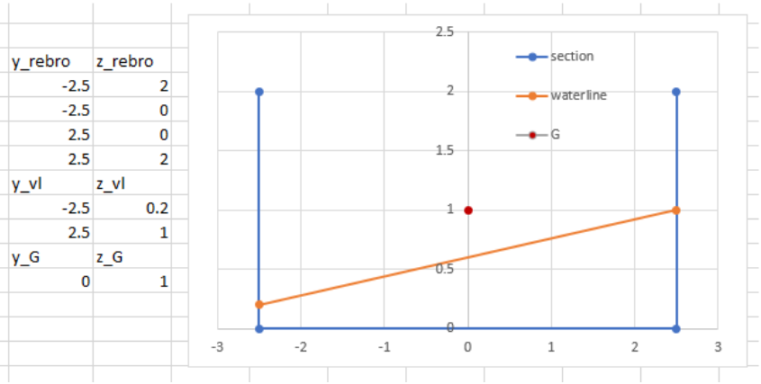
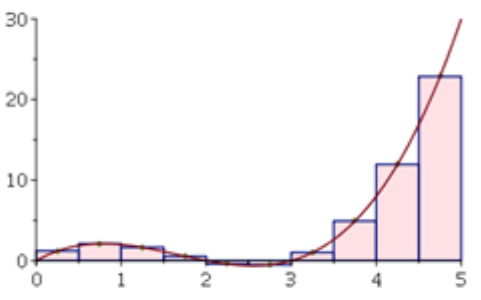
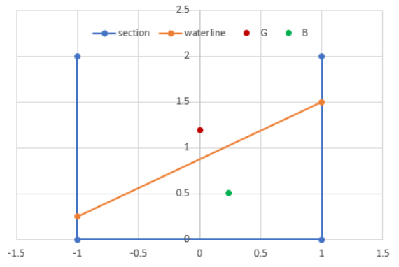

8 Hidrostatičke značajke poprečno nagnutog pontona
8.1 Koraci
- Otvoriti MS Excel
- Definirati ulazne parametre – izmjere pontona:
- Duljina pontona, L (m)
- Širina pontona, B (m)
- Visina pontona, D (m)
- Visina težišta od kobilice, KG (m)
- Definirati ulazne parametre – nagib pontona preko gaza na lijevoj i desnoj strani:
- Gaz na lijevoj strani, TP (m)
- Gaz na desnoj strani, TS (m)
- Poprečni kut nagiba pontona se izračuna: \(θ=tan^{−1}(\frac{T_S−T_P}{B})\)
- Nacrtati presjek (generirati točke te Insert > Charts > Scatter with straight lines)
- Teoretsko rebro je određeno linijama koje povezuju točke:
- Gornja lijeva {-B/2, D}
- Donja lijeva {-B/2, 0 }
- Donja desna {B/2, 0 }
- Gornja desna {B/2, D}
- Vodna linija je određena linijom između točaka:
- Lijeva {-B/2, TP}
- Desna {B/2, TS}
- Težište mase (G) ucrtati u točki {0, KG}
- Teoretsko rebro je određeno linijama koje povezuju točke:
- Numerički integrirati uronjeni presjek tj. gazove (od lijeve prema desnoj strani):
- Izabrati broj dijelova integrala, tj. sume, N (npr. 20)
- Odrediti širinu integracijskog koraka, dY = B / N
- Izraditi integracijsku tablicu s \(N\) redova prema sljedećem predlošku:
| Korak (i) | Poluširina (Yi) | Gaz trake (Ti) | Površina (dAi) | Horiz. moment (dAi⋅Yi) | Vert. moment (dAi⋅Ti/2) |
|---|---|---|---|---|---|
| 1 | \(-B/2 + dY \cdot (1 - 0.5)\) | \(T_P + (T_S - T_P) \cdot \frac{1 - 0.5}{N}\) | \(T_1 \cdot dY\) | \(dA_1 \cdot Y_1\) | \(dA_1 \cdot (T_1 / 2)\) |
| … | … | … | … | … | … |
| i | \(-B/2 + dY \cdot (i - 0.5)\) | \(T_P + (T_S - T_P) \cdot \frac{i - 0.5}{N}\) | \(T_i \cdot dY\) | \(dA_i \cdot Y_i\) | \(dA_i \cdot (T_i / 2)\) |
| … | … | … | … | … | … |
| \(N\) | \(-B/2 + dY \cdot (N - 0.5)\) | \(T_P + (T_S - T_P) \cdot \frac{N - 0.5}{N}\) | \(T_N \cdot dY\) | \(dA_N \cdot Y_N\) | \(dA_N \cdot (T_N / 2)\) |
- Proračun istisnine i težišta (zbrajanjem stupaca iz tablice):
- Uronjena površinu presjeka, \(A=∫T(Y)dY=∑T_i dY=∑dA_i\)
- Poluširina težišta presjeka tj. istisnine, \(y_B=∑(dA_i Y_i)/A\)
- Visina težišta presjeka, tj. istisnine, \(z_B=∑(dA_i T_i/2)/A\)
- Volumen istisnine pontona,\(∇=AL\), a masa istisnine \(Δ =∇ ρ\) (gdje je gustoća vode, npr. \(1.025 \text{ t/m}^3\))



8.2 Dodatni zadatak
Ako je poznat kut nagiba \(\theta\), te koordinate težišta uzgona \(B(y_B, z_B)\) i težišta mase \(G(0, KG)\), potrebno je odrediti \(GZ\) polugu statičkog stabiliteta koristeći geometrijsku transformaciju.